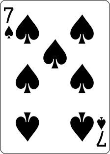
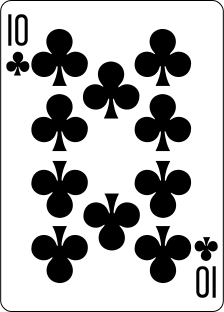
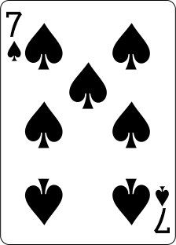
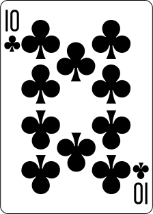
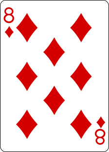
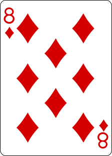
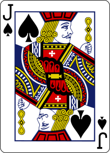
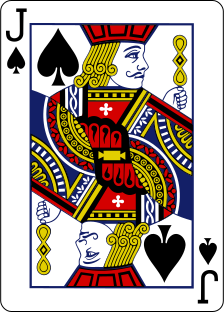

Introduction to Poker
In this article, we will consider the math behind Texas Hold'em, a popular variation of poker. We will not consider betting; rather, the odds at any given point in the process that your hole cards, in combination with the community cards, will win.Hole Cards
When the game starts, each player is dealt two cards face-down, which are referred to as the hole cards. These cards are unique to each player, and make their hand distinct from the other players'.Community Cards
Throughout the round, five cards are dealt face up on the table, in sets of 3, 1, and 1, referred to as the "flop", "turn", and "river", respectively. These cards can be used by all players to create their final hand of five cards.Scoring
Once all the cards are dealt, each player creates the best hand of five cards they can. They are then scored, and the player with the best hand wins. The types of hands are as follows, rated from 1 (lowest) to 9 (highest). (Note: you can click on the dice next to the hand type to be given another example.)1. High Card
If you don't have any of the following interesting hands, your hand is considered to be a high card hand. When this is the case, you score based on the highest card in your hand, breaking ties with the next highest, etc.
 





2. Pair
The lowest-scoring interesting hand in poker is the pair, which consists of two cards of the same rank. It beats a high card, and is often the lowest hand worth betting on.

3. Two Pair
What's better than one pair? Two pairs! This hand type beats a pair, but is still in the lower echelon of hands. However, it is still often worth betting on.

4. Three of a Kind
The next lowest-scoring hand in poker is the three of a kind, which conists of three cards of the same rank. This is quite a powerful hand for only needing three cards.

5. Straight
The first hand that includes all five cards is the straight, which consists of an incrementally increasing run of cards. Note that you can start or end a run with an Ace, but in an Ace-low straight, the Ace will be counted low for breaking ties.

 

6. Flush
This hand includes 5 cards of the same suit. Since straights and flushes can occur simultaneously, it is often worth betting on two sequential cards of the same suit. When breaking ties with this hand, the highest card wins, and then the next highest, and so on.


7. Full House
The first of the hands that combine previous types, the full house contains both a pair and a three-of-a-kind, beating most hands with ease. In Texas Hold'em, you might achieve this by holding a pair, and having a matching card and another pair in the community pile.

8. Four of a Kind
If a pair beats a high card, and a three-of-a-kind beats a pair, the four-of-a-kind is the culmination of this pattern. If you can manage to get ahold of all four cards of a rank, you have the second most powerful hand in the game.

9. Straight Flush
This is it, the most powerful hand in the game. Five sequential cards, all of the same suit. Like we mentioned above, it's useful to keep suited sequential cards, both because straights and flushes are good indpenendently, but also because getting a straight flush essentially wins you the hand.
 


Does this Win?
Imagine you're playing a game of poker, and you've been dealt the following hole cards. There's one other player at the table, and you share the following community cards. On average, will your hand win (counting ties against you)?Community Cards
Hole Cards

Do You Win?
Results
Why Did it Win? (or not)
Why is it the case that the hand from the previous exercise did or did not win on average? We provided a handy bar chart showing the number of ways you can win, tie, and lose. In short, there aren't actually that many possible hands your opponent can have, since they only have two unique cards. Specifically, if you have two hole cards and there are five community cards, then there are only \({45\choose 2}=990\) possible two-card combinations, each of which only has one best hand of five cards, when combined with the community pool. Hence, we can calculate the number of hands that your hand wins against, loses against, and ties with, simply by considering all 990 possible opposing hands.
Let's see the math in action. Below, you can simulate the game from above, but with a random pair of hole cards for the opponent each time. As you generate these, we will keep track of the running results, re-computing the percentage of wins each time. As the number of games grows large, it should approach the theoretical odds of winning, plotted on the dotted black line.
Community Cards
Hole Cards
Opponent's Hole Cards
Results (0 Game(s) Played)
Hand Probabilities
Using our framework, we ran simulated 1000 games per each of the different hand types to get an estimate of the average win rate of each of the hand types. We found the following results:
However, this experiment doesn't consider how many hole cards make up the given hand. For example, the hand could be 1 hole card and 4 community cards; 0 hole cards and 5 community cards or 2 hole cards and 3 community cards. To Better inform the user of their odds we ran the simulation 2 more times Once with 1 hole card and another with 2-hole cards and found the following:
Does this Win? (part 2)
Now that you've (hopefully) got the hang of poker, let's play again! You'll be dealt two hole cards and five community cards, and have to guess whether your hand will win on average. Think you have what it takes?Community Cards
Hole Cards